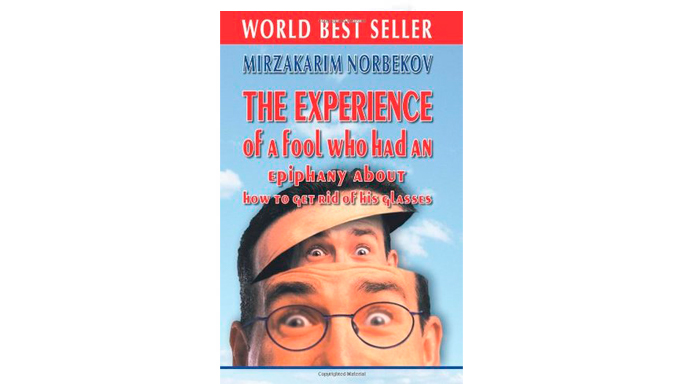

Autorius garsios knygos "Durniaus patirtis, arba kelias link
rėgos" Mirzakarim Norbekov šokiravo savo kūriniu visą mokslinį oftalmologijos ir mikrochirurgijos
pasaulį.
Dėka jo unikalaus kūrinio tik per 2023 metus dešimtis
tūkstančių Europos gyventojų pilnai atkūrė savo regėjimą, o komercinės klinikos tęsia prarasti klientus,
kurie atsisako brangiai kainuojančių ir nesaugių operacijų.

Mirzakarim Norbekov - psichologijos ir pedagogikos daktaras, filosoijos daktaras medicinoje, profesorius, veikiantis naris kelių akademijų, steigėjas ir prezidentas"Žmogaus savęs atkūrimo instituto", kelių žymių knygų autorius, kurie padėjo daugeliui žmonių.
Korespondentas: "Mirzakarim Sanakulovič, sveiki! Pradėsiu nuo pagrindinio klausimo, tai tiesa, kad jūs radote būdą atkurti regėjimą namuose be operacijos?"
Mirzakarim Norbekov: Sveiki! Taip, tai ištikrųjų yra tiesa ir aš be sustojimo gaunu dėkojimo laiškus iš žmonių, kurie visam laikui atsikratė akinių ir lęšių ir gyvena pilnu gyvenimu.
Korespondentas: "Galite papasakoti jūsų istoriją? Ir kas tai be būdas toks?"
Mirzakarim Norbekov: Viskas prasidėjo tolimais 2001 metais. Tada aš rašiau knygą, kuri vadinosi "Durniaus patirtis, arba kelias link rėgos". Joje aš atkreipiau didelį dėmesį į žmogaus psichomatiką ir kokiu būdu tai veikia regėjimą. Aš manau, kad pagrindinė daugumos žmonių regėjimo blogijėmo priežastimi yra neteisingas akių raumenų darbas, atsiradantis dėl nervinio ir psichikos įtampos.

Jei smegenys yra paveikiami įtampa, akys taip pat pradeda žiūrėti su įtampą ir
paveikslėlio interpretacija tinklainėje pažeidžiama. Kaip rezultatas, regėjimas blogėja. Tam, kad grąžinti
regėjimą iš pradžių būtina nuimti įtampą iš psichikos, o jau paskui imtis tam tikrų korekcijos formų. Tai
labai svarbi mintis, kurią daugumą nesupranta. Visos problemos nuo nervų, gidėjote? Tai va ir su regėjimu
vyksta tas pats.
Korespondentas: "Kaip aš žinau, ši knyga iki šiol labai populiari ir padeda daugeliui žmonių"
Mirzakarim Norbekov: Tai tiesa, metodo populiarumas ir efektyvumas buvo toks aukštas, kad per šiuos metus mums reikėjo atidaryti virš 120 konsultacinių ir mokymo centrų. Per šiuos ilgus metus mes padėjome dideliam skaičiui žmoniu grąžinti arba pagerinti savo regėjimą. Bet , dėja, buvo ir tokių, kuriems mes padėti negalėjome. Pagal mūsų skaičiavimus, per paskutinius 10 metų tik 60% žmonių atėjusių pas mus gavo norimą rezultatą. Kitiems 40% pagerėjimas buvo arba minimalūs, arba jų visai nebuvo.
Korespondentas: "Reikia pasakyti, kad 60% žmonių – tai labai gera statistika, atsižvelgiant į tą faktą, kad regėjimo atkūrimas vyko be operacijos, o tik dėka regėjimo gimnastikos ir darbu su psichosomatika."
Mirzakarim Norbekov: Galbūt Jūs esatę teisūs, bet ką daryti likusiems 40%? Eiti į operaciją? Arba susitaikyti ir gyventi nepilnavertiškai? Jūk būtent dėka mūsų jausmų organų mūsų gyvenimas turi spalvas.
Korespondentas: "Ir ką jūs padarėte?"
Mirzakarim Norbekov: Visus šiuos metus mes ieškojome universalų būdą, kuris padėtų kuo įmanoma didesniam žmonių skaičiui grąžinti sau regėjimą. Mes pastebėjome, kad geresnį rezultatą pasiekti pasiseka tiems mūsų pacientams, kas papildomai naudoja skirtingus vitaminų kompleksus, mikroelementus ir specialias priemones, veikiančias mūsų smegenų aktyvumą. Todėl su 2013 metais mes tapome parinkinęti skirtingus kompleksus preparatų ir jų dozavimą su tikslu rąsti formulę, maksimaliai veikiančią natūralų regėjimo atkūrimą.

Korespondentas: "Pavyko?"
Mirzakarim Norbekov: Pirmų 5 metų bėgyje buvo kliniškai sutestuoti virš 820 skirtingų
formulių veikiančių medžiagų ir jų dozavimų. Be abėjones, rezultatas buvo, bet norėjosi geresnio. Pabaigoje
2018 -ų metų mūsų bandymai pagaliau baigėsi nuostabe sėkme,
kurią negalėjome patikėti.
Vienas iš šaltų gruodžio dienų prasidėdavo kaip visada. Manimi kartu su
mokslininkų grupe buvo paruošta eilinė kombinacija preparatų ir dozavimų ir perduota mūsų fokuso grupei
bandymams. Fokuso grupė buvo sudaryta iš 12 žmonių, kurie buvo pas mus stacionariniame gydyme ir prižiūriame
mokslininkais. Vos per porą dienų pas mane į kabinetą atėjo pacientas su akimis pilnomis nuostabo ir
pasakė: "Daktare, mano regėjimas juk -6, aš ankščiau net laiko ant sienos laikrodžio palatoje
neatskirdavau. Bet šiandien man kažkas ne to. Aš matau, tiesiog matau. Lyg tai, kažkas pasuko aiškumą
paveikslėlio mano akyse" .
Tai buvo pirmas skambutis. Po 21 dienų, po klinikinių testų
pabaigos, mes gavome rezultatą, kurio nesitikėjome. 12 iš 12 pacientų sugebėjo atkurti regėjimą daugiau
nei 70% .
Po to mes iš karto išsiuntėme mūsų formulę didesniam klinikiniam tyrimui.
Rezultatas - 94% tyrimą atliekančių žmonių iš dalies arba pilnai atkūrė savo regėjimą. Tai tapo didžiuliu
proveržiu neoperaciniame regėjimo gydyme .
Kliniškai nustatyti preparato veikimai
- Akių ligų profilaktika
- Regėjimo atkūrimas ir išsaugojimas
- Apsauga regėjimo esant aukštoms regėjimo pakrovoms (darbe su kompiuteriu, skaitymo metu, esant negatyviam saulės spindulių poveikiui)
- Vidinio akių spaudimo normalizavimui
- Apsauga lęšio, įskaitant regos silpnumą
- Regėjimo aštrumo gerinimas
- Atkūrimas pažeistų regos organų audinių
- Regėjimo organų kraujotakos pagerinimas
- Nuima sausos akies sindromą (nuovargį, niežulį, paraudonavimą, nemalonų skausmą)
Korespondentas: "94% tai tikrai didžiulis rezultatas, operacijos dabar liks praeityje? "
Mirzakarim Norbekov: Aš manai, kad operacijos liks, bet poreikis jas atlikti bus mažesnis, nei buvo ankščiau. Po sėkmingų klinikinių bandymų iš karo 4 didžiausios farmaceutinės bendrovės pasiūlė išpirkti patentą į preparato gamybą pagal mūsų formulę. Bet mes jiems atsisakėm ir buvo priimtas sprendimas gaminti ir parduoti preparatą tik Europos teritorijoje.
Korespondentas: "Bet juk gamybai naujo preparato reikalingos didelės investicijos. Jūs jas radote Europoje?"
Mirzakarim Norbekov: Po sėkmės, mes gavome virš 40 investicinių pasiūlymų nuo stambių įmonių. Bet mums reikalingas patikimas ir visiems žinomas partneris, todėl mes priėmėme pasiūlymą iš Sveikatos apsaugos ministerijos, kuri investavo į preparato kūrimą. Po neilgų posėdžių buvo patvirtintas pavadinimas naujo Europietiško preparato regėjimo gerinimui - .
Korespondendas: "Galite paaiškinti kokias regėjimo problemas gydo ?"
Mirzakarim Norbekov: Išskyrus paprastą regos pablogėjimą klinikinėse bandymuose dalyvavo pacientai su tokiomis ligomis kaip:
- trumparegystė,
- glaukoma,
- katarakta,
- regos nervo uždegimas,
- regos nervo nevrikas,
- uveitas,
- choreoretinitas,
- tinklainės atskyrimas,
- ragenos užtemimas,
- blefaritas,
- koniuktyvitas,
- pigmentinis retinitas,
- keratitas
Todėl, jei jūs turite bent vieną iš šio sąrašo ligų, drąsiai galite naudoti šį preparatą.
Korespondentas: "Aš manau mūsų skaitytojams kilo logiškas klausimas. Kas būtent yra formulėje šio preparato ir kodėl jis toks unikalus?"
Mirzakarim Norbekov: Preparatas neturi kokių nors unikalių veikiančių medžiagų. Visa
esmė būtent teisingai parinktame komplekse šių medžiagų ir išrinktų dozavimų. Kaip rodo medicininė praktika
– būtent tai yra pagrindis faktorius efektyvaus neoperacinio gydymo ir regėjimo korekcijos.
Svarbiu
faktoriu yra tai, kad preparatas gavosi absoliučiai natūraliu, todėl praktiškai neturi šalutinių poveikių ir
gali būti naudojamas be gydytojo paskyrimo. Kitaip tariant, jūs galite atkurti regėjimą savarankiškai
namuose .
Į sudėtį įeina:
- Mėlynių uogų ekstraktas. Gerina regėjimo aštrumą, tvirtina akių tinklainę. Mėlynės labai pagerina akių obuolių kraujotaką. Tai, leidžia jiems pasiekti didesnį deguonį ir skirtingus naudingus komponentus.
- Ginkgo bilobos lapų ekstraktas. Padeda atkuri pažeistą akies tinklainę ir gerina regėjimą.
- Jonažolės žolės ekstraktas. Gerina regėjimo organų būklę, prisideda prie regėjimo atkūrimo.
- Martinijos kvapiosios ekstraktas. Užtikrina regėjimo aštrumą ir stabdo su amžiumi susijusį regėjimo pablogėjimą.
Korespondentas: "Šis preparatas jau gaminamas? Ir kiek jis kainuos?"
Mirzakarim Norbekov: Pirma partija kiekiu 120 000
pakuočių buvo pagaminta 2018 metais. Ši partija buvo išsiųsta klinikoms ir oftalmologijos centrams su
išplatinimo rekomendacija po 1 eurą . Mes dar norėjome įsitikinti, kad mūsų formulė efektyvi. Vos per
kelius mėnesius gavome tūkstančius padėkų visoje šalyje. Žmonės tęsia sėkmingai atkurinėti regėjimą
preparatu ir mes esame labai tuo patenkinti.
Gavus tiek nuostabių
atsiliepimų ir įkvėpę rezultatais mes nusprendėme pravesti dar vieną akciją, bet dabar jau internetu, kad
daugiau žmonių galėtų išbandyti ant savęs.
. preparatas gali gauti absoliučiai bet koks šalies gyventojas
už kainą su akcija. . Preparato realizacija vykdoma užsakymo būdu mūsų oficiliame tinklapyje.
Pasibaigus akcijai preparato kaina sudarys ,tai bus minimali mažmeninė kaina preparato
pardavimui vaistinėse ir oftalmologijos centruose. Galutinė kaina buvo įtvirtinta visomis instancijomis ir
aukščiau nepasikels. Šalies vaistinėse preparatas pasirodys
pavasarį 2021 metų.
Korespondentas: "Mirzakarim, dėkojame Jums už įdomų ir svarbiausia naudingą intervių. Norite pasakyti kažką atsisveikinant?"
Mirzakarim Norbekov: Pasakysiu tik vieną. Jūsų didžiausias ginklas – tai jūsų tikėjimas. Tikėjimas savimi, į sėkmę, į geriausią ateitį. Mes tikime, kad mums pavyks ir mums pavyko. Todėl atkurinėkite savo regėjimą, gyvenkite pilnu gyvenimu, tikėkite savimi ir jums taip pat pasiseks. Kaip sakė žymus filosofas, stebuklas jau čia, tik atidarykite jam savo širdį. Sėkmės!
preparato gavimo instrukcija:
Akcijos laikotarpis () būtina:
- Užpildyti užklausą specialiai sukurtame tinklapyje .
- Sulaukti skambučio iš operatoriaus ir nurodyti, kokiu adresu bus vykdomas pristatymas
- Po kelių dienų reikės priimti siuntą bet kuriuo jums patogiu būdu
Preparato pristatymas vykdomas į bet kurią Europos šalį.
Dėka jūs:
- Išsaugosite savo regėjimą
- Sumažinkite vidinį akių spaudimą
- Pašalinkite pavojingų ligų riziką
- Apsaugokite akies struktūrą nuo sunaikinimo laisvais radikalais

PRIDĖTA 2023
Dėl didelio užsakymo skaičiaus,
gamintojas turėjo apriboti akcijos pravedimo sąlygas.
Šiuo metu akcija galioja iki . imtinai. Iki jos pabaigos originalias kapsules «» galima gauti iš oficialaus
tinklapio su nuolaidą!
Primename, kad “” prieinamas visiems norintiems iki . imtinai
Petras 2023
Ačiū. Išrašiau akcijos metu. Pabandysiu pasigydyti, regėimas su amžiumi blogėja, operaciją daryti bijau. Kaimynas padarė, jau 2 metus kankinasi. Viskas ten puliuoja ir nesugydo.
Ona Fakolskaitė 2023
Pilnai tvirtinu. nerealios kapsulės. Bandžiau jais atkurti
regėjimą. Paskutiniu metu blogai matau net kelio ženklus. Pradėjau gerti kapsules pažįstamo patarimu, ir
viskas pagerėjo. Regėjimo aštrumas grįžo. Visiems rekomenduoju!
Veronika 2023
Dėkoju už straipsnį. Įdomu. Jei tokia puiki akcija, kodėl neišbandžius. Autorių žinau jau seniai, daugybė pažįstamų pagal jo knygas grąžino sau regėjimą.
Kęstas 2023
Kaip ir dabar atkurinėju regėjima šiuo preparatu. Tik antra savaitė prasidėjo, o regėjimas
žymiai pagerėjo. Jei ankščiau iš 5 aukšto namo negalėjau mikroautobuso numerius užmatyti, tai dabar juos
matau.
Vidmantas 2023
Irgi turiu patirtį su šiomis kapsulėmis ir taip pat teigiamą. Atkuriau regėjimą iš minus 5 iki minus 1,5. Gėriau vos mėnesį.
Odeta L. 2023
Daug girdėjau apie gero nuo tų, kas naudojo jį iš nemokamos partijos, bet aš tada nespėjau gauti. Ačiū, kad padarėte dar vieną akciją, dabar pagaliau spėjau užsakyti.
Lauryna 2023
Pažįstama darėsi akių operaciją praeitais metais. Du kartus (buvo pakartotina). Rezultato visai negavo, o ant dešinės akies regėjimas dar poblogėjo! Gydytojai sako, kad jokių garantijų nėra. Vat ir sutik paskui darytis operaciją.
Steponas Jampolskis 2023
Maloniai nustebintas kapsulių veikimu. Gavau taip pat po 1 eurą iš pirmos partijos, bet tiesą sakant, vistiek nelabai tikėjau. Maniau, kad su nuolaidą aš jau tikrai nieko gero negausiu. Per už 1,5 savaitės regėjimas pagerėjo nuo -3.5 iki -2.5. Pasirodė trumpalaikis pilnas regėjimo atkūrimas (kelias sekundes). Tęsiu gydymą. Tikrai labai puikūs vaistai.
Mantas Levickas 2023
Mūsų mokslininkai visada buvo ir bus stipriausi, todėl, kad turime gerą mokyklą. O autorius tai tiesiog žmogus-stebuklas be pagyrų, tiek daug padarė žmonių sveikatai, kad nes neperskaičiuoti, labai jį gerbiu.
Evelina
Šiandien paėmiau siuntą iš pašto. Viskas gerai. Pristatė greitai. Ir nuostau, kad iš tikrųjų su nuolaiką. Ačiū už tokią akciją. Pradėjome profilaktiką su visą šeimą.
Monika Ulzbokienė 2023
Maniau jau regėjimo korekciją darytis, bet labai bijojau. Prieš 2 mėnesius sužinojau apie . Nusprendžiau pagerti pradžiai – regėjimas pagerėjo, dabar nedarysiu operacijos
Povilas K. 2023
Ačiū už rekomendacijas. Aš mačiau šį preparatą vienoje vaistinėje, ir jį parduodavo už 1500 eurų!! Turbūt pirkdavo pigiau ir trys kartus brangiau bandė įstumti, baravykai
Vaidas 2023
Sveiki visi! Prieš mėnesį išgėriau kursą, ir regėjimas tapo 1!!! Tiesiog neturiu žodžių. Labai ačiū!
Saulius 2023
Perskačiau detaliau apie preparatą oficialiame tinklapyje ! Stulbina!
Žana 2023
Man visai patarė pažįstamas okulistas, pasakė, kad geriau už šį preparatą nieko nerasiu net visiems žinomoje Amerikoje Geriu jau antrą savaitę, pradėjau matyti, lygtais pelenai nuo akių pasitraukė. Toks puikus jausmas, žodžiais neperduosi.
Aurima Z. 2023
Aš geriu akių nuovargiui sumažinti. Daug dirbu su kompiuteriu. Labai padeda.
Irmantas Sukalskis 2023
Ačiū! Mums pensininkams darytis operaciją labai brangu. Gerai, kad yra geri žmonės, kurie išplatina vaistus su nuolaidą.
Jadvyga Žukauskienė 2023
Pasakysiu tiesą, atkurti regėjima gimnastikos pagalbą tai tas pats, kaip padidinti papus, tiesiog juos valant. Girdėjau, kad yra rezultatų, bet silpnai jais tiku. O preparatu manau visai galima, perskaičau sudėtį , ir labai nustebau, manau su nuolaidą paimti ir neišbandžius tikrai gailėsiuos.
Marija 2023
Ačiū!!!

Komentarai